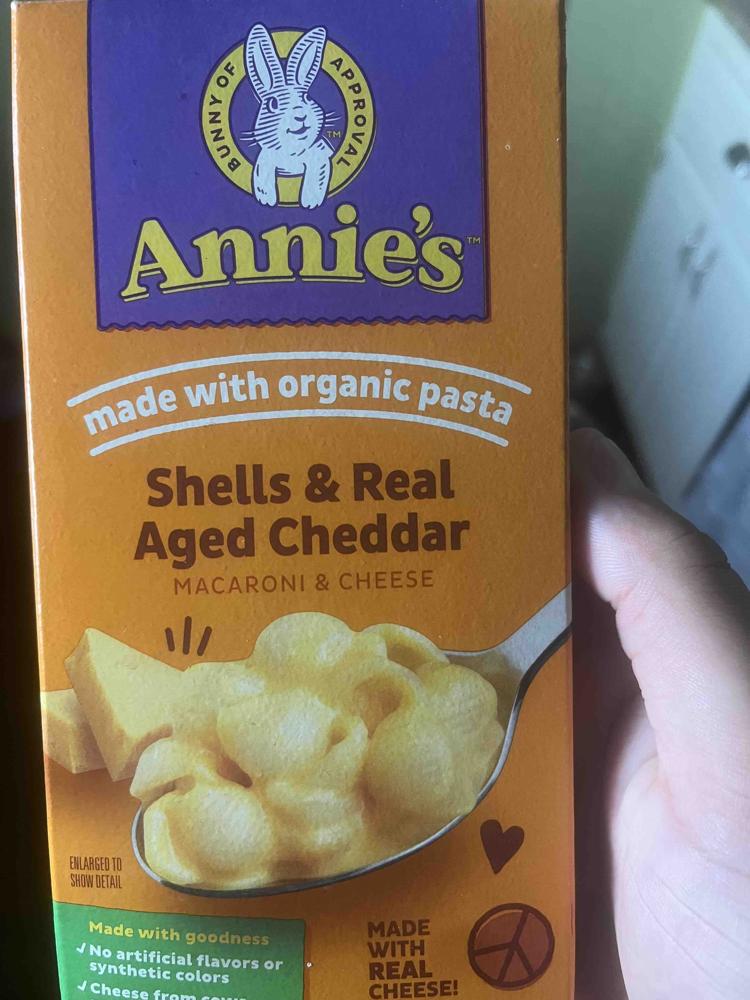

Annies Macaroni

Description
Made with organic pasta, shells and real aged cheddar.
You need milk a colander and something to stir with.
- BOIL 6 cups of water in a medium saucepan.
- Stir in PASTA and cook 8-10 minutes or until done, stirring occasionally.
- Drain pasta in COLANDER. while pasta is draining.
- Add 3 Tbsp low fat MILK to the warm saucepan. Richer flavor: add 2 Tbsp unsalted butter.
- SPRINKLE cheese over milk. Stir to combine
- Add cooked pasta and STIR well.
Return to Home